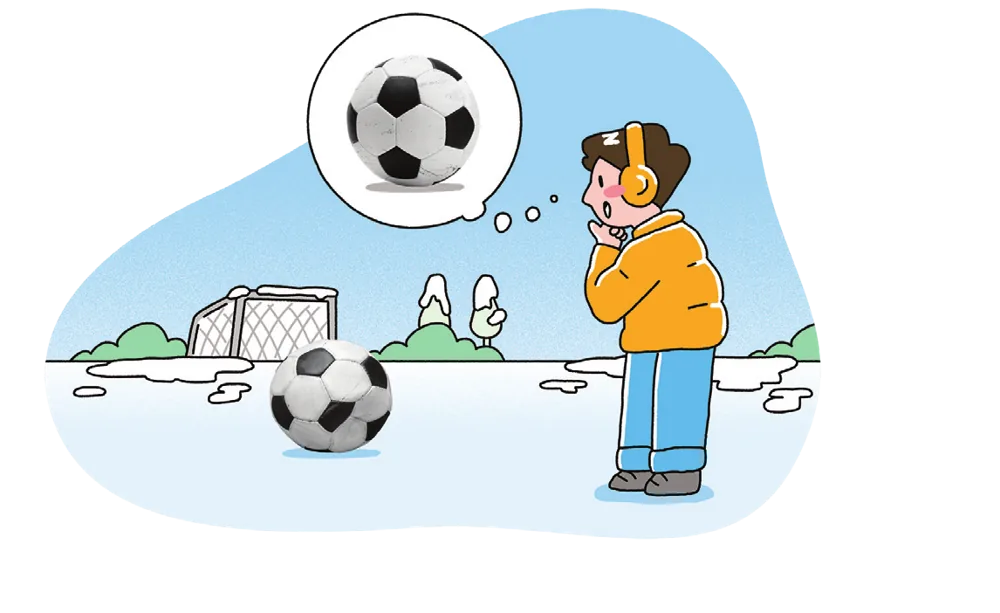
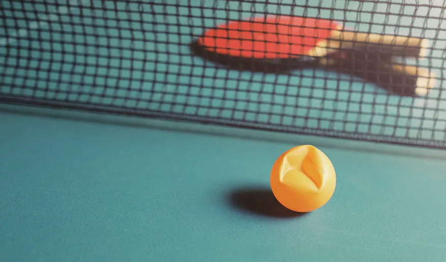
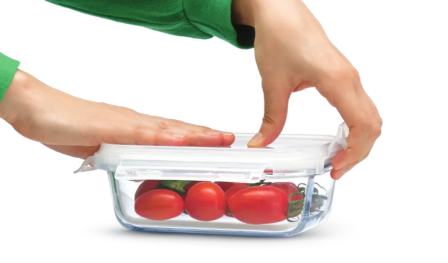

들어가기교과서 214쪽
이전 단원 확인하기부피가 늘어나는 것은?
(가)와 (나) 중 고무풍선을 씌운 삼각 플라스크를 넣었을 때 플라스크 속 기체의 부피가 늘어나는 것을 골라 보자.
정답: (가)
80 ℃ 물에 넣으면 플라스크 속 기체의 온도가 높아져 부피가 늘어나므로 고무풍선이 부풀어 오른다. 얼음물에 넣으면 기체의 부피가 줄어든다.
이 단원을 배우면
· 온도에 따른 기체의 부피 변화를 이용하여 생활 속 문제를 해결할 수 있다.
생각 깨우기축구공이 왜 찌그러졌지?

겨울철 축구공을 바깥에 오래 두면 찌그러지는 까닭은 무엇일까?
축구공 속 기체의 온도가 낮아지면 기체 입자의 운동이 느려져 기체의 부피가 줄어들기 때문이다.
기체의 온도와 부피 관계를 확인할 수 있는 현상교과서 214쪽
축구공과 열기구
추운 겨울날 운동장에 축구공을 오래 놓아두면 공이 찌그러진다. 이것은 축구공 속 기체의 온도가 낮아지면 기체 입자의 운동이 느려져 기체의 부피가 줄어들기 때문이다.
열기구를 띄울 때에도 기체의 온도와 부피 관계를 이용한다. 열기구의 풍선 속 기체를 가열하면 기체의 온도가 높아지면서 풍선이 크게 부풀어 오른다. 이때 풍선 속 기체의 일부가 풍선 밖으로 밀려 나가면서 열기구가 가벼워져 위로 떠오른다.
① 열기구의 풍선 속 기체를 가열한다.
② 풍선 속 기체의 온도가 높아지면서 기체의 부피가 늘어나 풍선이 부풀어 오른다.
여름철 햇빛 아래 과자 봉지
여름철에 햇빛이 비치는 곳에 놓아둔 과자 봉지가 부풀어 오른다.
→ 과자 봉지 속 기체의 온도가 높아지면 기체의 부피가 늘어나 과자 봉지가 부풀어 오른다.
열기구 띄워 보기온도가 높아지면 부피가 늘어나 기체가 밀려 나간다
버너를 켜서 풍선 속 기체를 가열해 보자
버너를 켜면 풍선 속 기체의 온도가 올라가고, 끄면 천천히 식는다. 풍선 아래쪽 입구로 밀려 나가는 입자를 관찰해 보자.
생각해 보기시뮬레이션 관찰 정리
- 1버너로 가열하면 풍선 속 기체 입자의 운동은 어떻게 변하는가?
입자 운동이 빨라지고 풍선 벽에 더 강하게 충돌한다.
- 2열기구가 위로 떠오르는 까닭은 무엇인가?
풍선 속 기체의 온도가 높아져 부피가 늘어나면서 기체의 일부가 풍선 밖으로 밀려 나가므로 열기구가 가벼워지기 때문이다.
- 3버너를 끄면 열기구는 어떻게 될까?
풍선 속 기체의 온도가 낮아져 부피가 줄어들고, 바깥 공기가 다시 들어와 열기구가 무거워지므로 아래로 내려온다.
기체의 온도와 부피 관계를 이용하여 생활 속 문제 해결하기교과서 215쪽 · 해 보기
해 보기어떻게 해결할까?
기체의 온도와 부피 관계를 이용하여 다음 두 가지 상황의 문제를 해결하는 방법을 써 보자.
① 탁구공이 찌그러졌어.

버튼을 눌러 확인해 보자.
해결 방법
탁구공을 뜨거운 물 위에 올려놓는다.
② 냉장고에서 꺼낸 밀폐 용기의 뚜껑이 열리지 않아.

해결 방법
밀폐 용기를 뜨거운 물에 담근다.
- 1자신이 생각한 방법을 친구와 비교해 보고, 해결 방법의 원리를 설명해 보자.
찌그러진 탁구공 | 뜨거운 물 위에 찌그러진 탁구공을 올려놓으면 탁구공 속 기체의 온도가 높아지면서 기체의 부피가 늘어나므로 탁구공이 펴진다.
뚜껑이 열리지 않는 밀폐 용기 | 뜨거운 물에 밀폐 용기를 담그면 용기 속 기체의 온도가 높아지면서 기체의 부피가 늘어나므로 용기의 뚜껑이 잘 열린다.
- 2위에 제시한 상황 외에 다른 예를 찾아 그 방법과 원리를 이야기해 보자.
포개져 빠지지 않는 두 개의 그릇 | 아래쪽 그릇의 아랫부분을 뜨거운 물에 담그면 두 그릇 사이에 있는 기체의 부피가 늘어나 위쪽 그릇을 밀어내므로 그릇이 쉽게 빠진다.
자동차의 타이어 | 기온이 낮은 겨울철에는 타이어 속 공기의 부피가 줄어들기 때문에 타이어 속 공기의 적정 압력을 유지하기 위해 공기를 더 넣어 준다.
확인하고 정리하기교과서 215쪽
스스로 확인하기
- 1열기구의 풍선 속 기체의 온도가 높아지면 기체 입자의 운동이 ( 빨라져, 느려져 ) 기체의 부피가 늘어난다. → 빨라져
- 2문제 해결 능력 | 냉장고에서 꺼낸 달걀을 바로 끓는 물에 넣으면 달걀 껍데기가 쉽게 터진다. 이것은 달걀 껍데기 안쪽에 들어 있는 공기와 관련 있다. 달걀 껍데기가 터지지 않게 달걀을 삶는 방법을 온도에 따른 공기의 부피 변화와 관련지어 설명해 보자.
냉장고에서 꺼낸 달걀을 끓는 물에 바로 넣으면 달걀 껍데기 안쪽에 들어 있는 공기의 부피가 갑자기 늘어나면서 껍데기가 터지기 쉽다. 따라서 달걀을 냉장고에서 미리 꺼내 두었다가 찬물에 넣어 약한 불로 서서히 가열하면 달걀 껍데기가 터지는 것을 막을 수 있다.
O / X 확인문장이 옳으면 O, 옳지 않으면 X
③은 압력에 따른 부피 변화이므로 보일 법칙과 관련된 현상이다.
구분하기보일 법칙일까, 샤를 법칙일까?
| 현상 | 관련 법칙 |
|---|---|
| 높은 산 위에서 과자 봉지가 부풀어 오른다. | 보일 법칙 |
| 햇빛 아래 둔 과자 봉지가 부풀어 오른다. | 샤를 법칙 |
| 잠수부가 내뿜은 공기 방울이 위로 올라갈수록 커진다. | 보일 법칙 |
| 열기구의 풍선 속 기체를 가열하면 풍선이 부풀어 오른다. | 샤를 법칙 |
| 공기 침대에 누우면 공기 침대가 찌그러진다. | 보일 법칙 |
| 찌그러진 탁구공을 뜨거운 물에 넣으면 펴진다. | 샤를 법칙 |
압력이 변해서 부피가 변하면 보일 법칙, 온도가 변해서 부피가 변하면 샤를 법칙!
배운 내용 정리하기 · 샤를 법칙 관련 예
| 기체의 온도가 높아지면 | 기체의 온도가 낮아지면 |
|---|---|
| 기체의 부피가 늘어난다 | 기체의 부피가 줄어든다 |
| 여름철 자전거 타이어가 팽팽해진다 열기구의 풍선이 부풀어 오른다 찌그러진 탁구공이 펴진다 밀폐 용기의 뚜껑이 잘 열린다 | 겨울철 축구공이 찌그러진다 겨울철 타이어에 공기를 더 넣어 준다 추운 바깥에서 은박 풍선이 쭈그러든다 |
다음 시간에는
‘2. 기체의 온도와 부피 관계’ 중단원을 정리해 보자. (교과서 216~217쪽)
진로와 직업교과서 216쪽 · 친환경 자동차를 개발하는 자동차 공학 기술자
세계적으로 환경 문제에 대한 관심이 커지면서 자동차 산업은 친환경 자동차를 중심으로 발전하고 있다. 자동차 공학 기술자는 수소 연료 전지 차, 전기 차, 하이브리드 차 등을 연구하고 개발하는 일을 한다.
그중 수소 연료 전지 차는 수소와 산소가 반응할 때 발생하는 전기 에너지로 자동차를 움직인다. 수소 기체는 액체로 만들기 매우 어려우므로 많은 양의 수소 기체를 저장하기 위해서는 높은 압력을 견딜 수 있는 탱크가 필요하다.